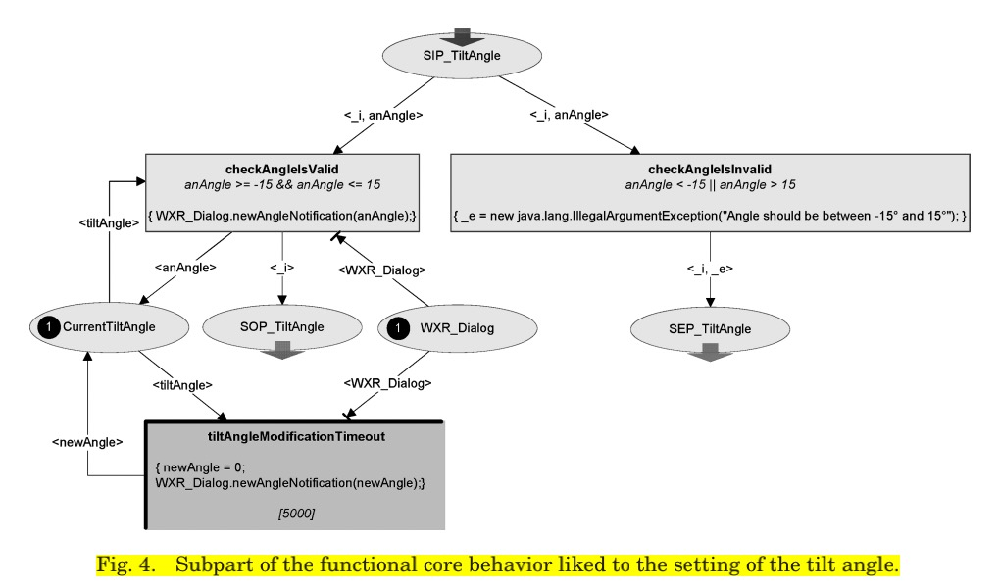

Component 2: Mouse Interaction
The mouse and pointer are significant components of the WIMP interface because they provide a more natural and intuitive way for users to interact with computers. Before the development of the WIMP interface, users had to interact with computers using text commands, which could be difficult and time-consuming, especially for non-technical users.
The mouse and pointer allow users to interact with the interface using visual cues and physical gestures, such as pointing, clicking, and dragging. This makes it easier for users to navigate through menus, select icons and buttons, and manipulate windows and files.
David Navarre and other researchers introduced a measurement to break down and reconceptualize the mouse interactions, which is called the User Interface Description Language. They break down the interaction into the raw events, higher-level events and the reaction of graphic components. For example, "the sequence of (up, down, up, down) events would be composed in a doubleclick event, provided that the input device has not been moved and that the total time for that sequence is smaller than a given threshold. (Navarre et.al 185)
Here's my demonstraction of how to convert the mouse's raw event (down, move up) into a higher-level event (mouseDragged) and finally reflect on the graphical interface.